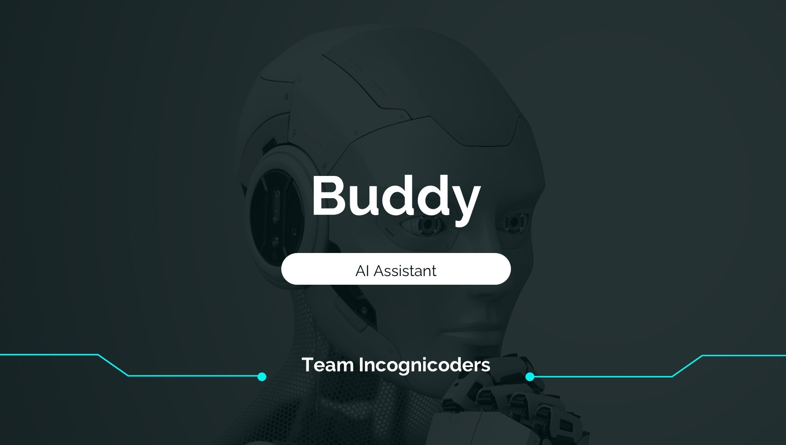
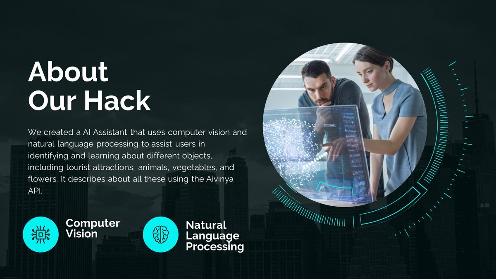
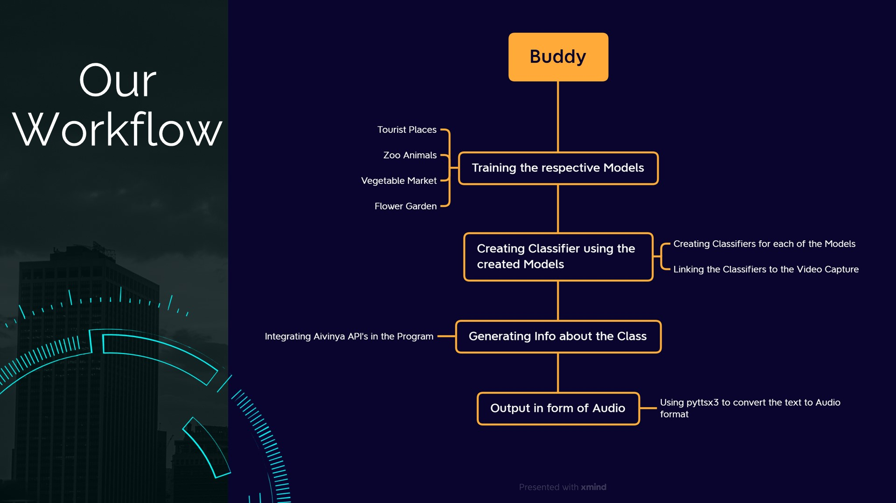
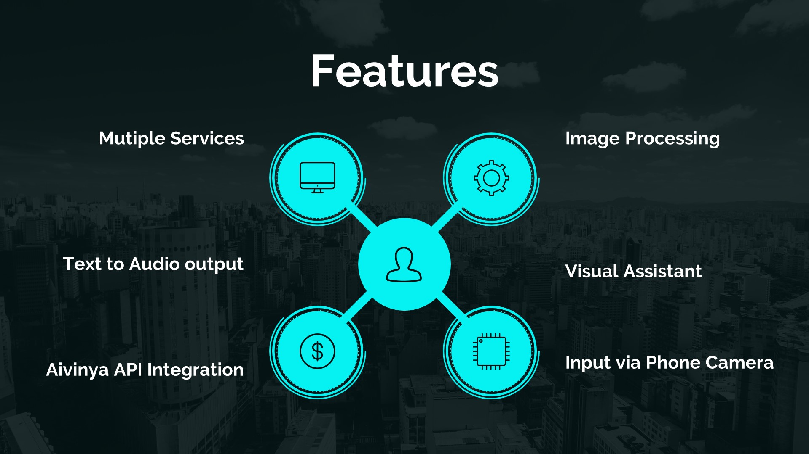
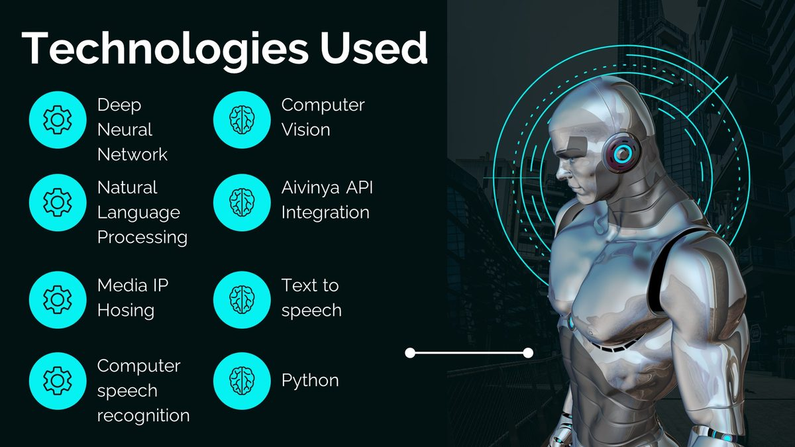
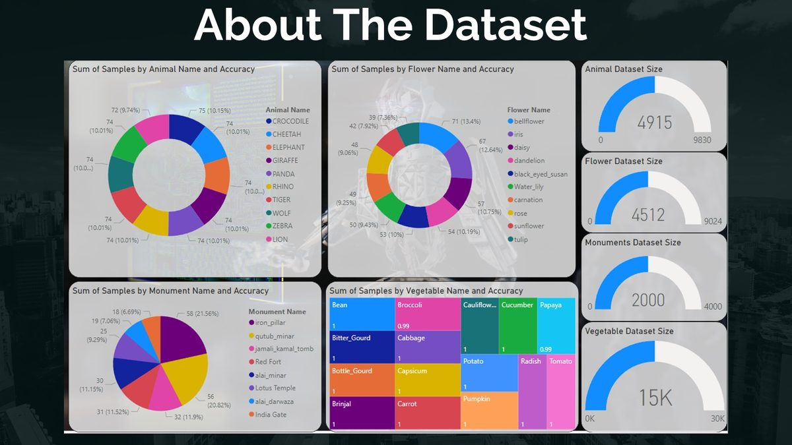
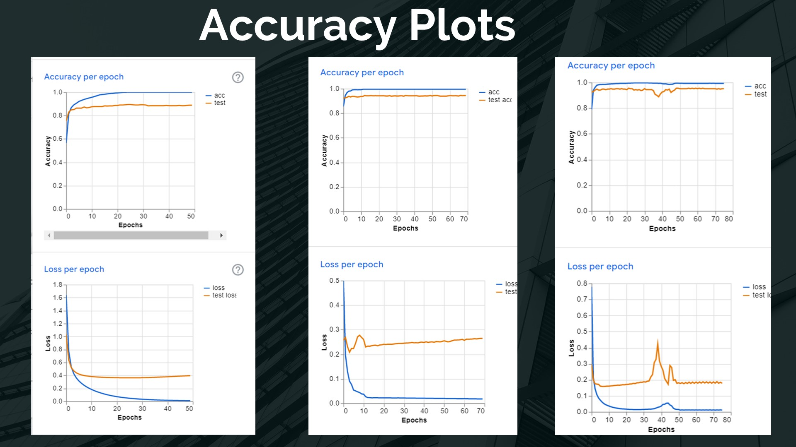

Buddy is an AI assistant created to help users identify and learn about various objects. It is a versatile tool for exploring tourist attractions, learning about different animals, vegetables, flowers, and more. By integrating the Aivinya API, Buddy provides detailed descriptions of each identified object — converting them to audio via text-to-speech so users can learn hands-free.

How It Works
Buddy uses a combination of a deep neural network (DNN), computer vision, and natural language processing. The DNN processes images to identify objects; computer vision generates a detailed description; and an NLP-powered TTS system converts that description into audio.
In addition to image input, Buddy can also recognize text and speech queries — allowing users to ask questions and receive natural language responses. The NLP layer understands the intent behind each question to return relevant, accurate information.
Demo Video
Project Gallery






Future Directions
- Speech recognition integration — full hands-free interaction with voice commands.
- Augmented reality — overlay information on real-world objects through the camera.
- Wearable integration — embed Buddy in smart glasses or watches for on-the-go use.
Summary
Buddy is an innovative AI assistant that provides a wealth of information on real-world objects through computer vision and NLP. With the potential for further advances in AR, speech recognition, and wearables, it has strong potential as an accessibility and learning tool.
View on GitHub